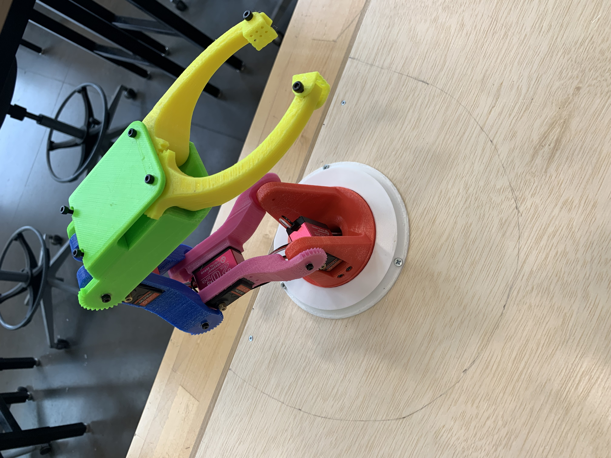
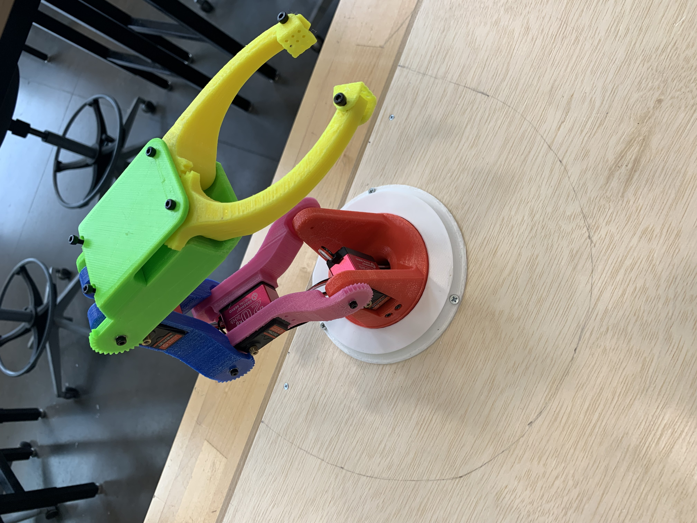

Team Size: 3 | Time Frame: 6 months | Outcome: Success
Scope
This project was for my senior design capstone class in conjunction with 2 other partners that were part of the Electrical Engineering and Mechanical Engineering departments. A nearby children’s science museum wanted a robotic arm exhibit for the kids to interact with. This exhibit had to conform to set size, durability, and repairability constraints.
Challenges
My role in this project was the ‘design and manufacturing engineer’, in this role the greatest challenge that I faced was making the design as simple as possible and minimizing part counts while also making the arm fully functional. To overcome this issue, I added integrated gears to each arm segment on the right side that interact with the servo motor embedded in the previous segment.
Outcome
At the end of the 6-month period, the exhibit was successfully completed and delivered to the museum. Each segment of the arm is a different color, and the buttons are color coded to the segment that they control.
Graffiti Bot
This video shows the first test that we did with paint:
Project Details
Team Size: 3 | Time Frame: 3 months | Outcome: Success
Scope
This Graffiti Robot was part of one of the project-based classes during my junior year. We were tasked with designing a robot that was able to reproduce images onto the ground using any medium. The robot was required to have a working area of at least 2.5ft^2, mark concrete and wood, and be able to be carried by one person.
Challenges
My primary role during this project was programming the robot while also assisting with its design. The most challenging part of this project was our budget of $150; after buying the necessary electronic components and belts, we were left with $30 to build the frame of the robot. As a team, we decided that pvc pipe would be a suitable choice for the frame as well as the “linear rails”.
Outcome
While all the other teams used markers or pens for their robots, we were the only team to use actual paint. We were also the only team to not use a ‘typical’ x-y gantry design. Our robot was confined to 2.5ft width images, however, the length of the image could theoretically be infinite, or curved due to the entire frame being mobile with individually driven wheels on either side.
Autonomous Rover
This video shows the rover completing "mission 3", where the rover has to find and point north.
*The chord is only for power purposes
Project Details
Team Size: 3 | Time Frame: 3 months | Outcome: Success
Scope
The autonomous rover project was done in another project-based class during the second semester of my junior year. The rover had to be able to navigate rough terrain while maintaining movement accuracy and indicate when it had completed its task. As the semester progressed, we were required to adapt our rover to be able to complete ‘missions’ with increasing difficulty. The first mission was to drive in a 10ft square and end up within 3ft of its starting location and the final mission was to navigate to a specified set of coordinates.
Challenges
Like the graffiti robot project, my role was primarily programming while also assisting with designing components. The greatest challenge that we faced was designing for the components that we
Outcome
Using the pre-assembled RC car and adapting it to our needs was extremely useful for both quick adaptation to new missions and budget friendliness. Through the changes made, our rover was able to complete all the required missions in a timely and accurate manner.
 
